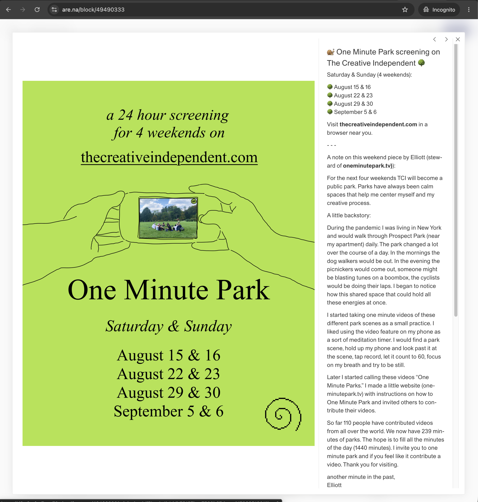
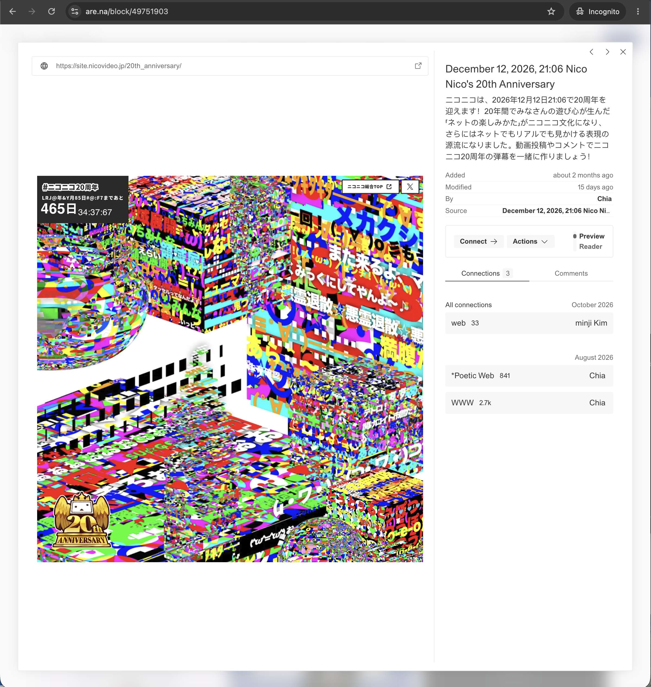
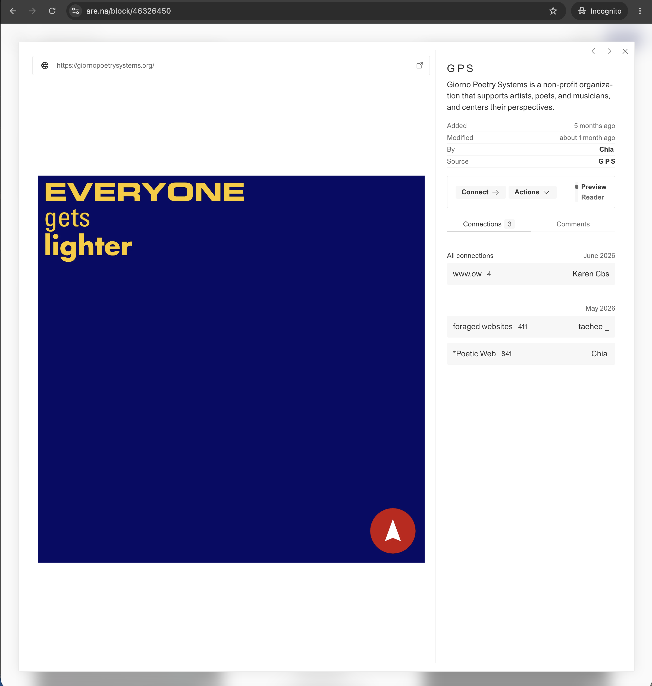

The artist website I chose was Are.na and here are some of the pages that I took a screenshot.

This screenshot gives the viewer some information about an upcoming event. The event that is being advertised is a four weekend screenining of the creative independent. Four selected weekends are showcasing work based on the park.

I like this page because it shows a distored but colorful looking composition. The page also shows the name of the event tied to this composition. What this page means to viewers is that creativity is always how you showcase upcoming events. In this case, the event is Nico Nico's 20th Anniversary coming up in December 2026.

The screenshot shows a composition of a blue box with yellow text reading "EVERYONE gets lighter". It also gives the description of Giorno Poetry Systems which supports artists, poets, and musicians. I feel that this page tells viewers that there are not that much creatives such as artists and musicians becuase everything is now going digital with the incorporation of artificial intelligence.